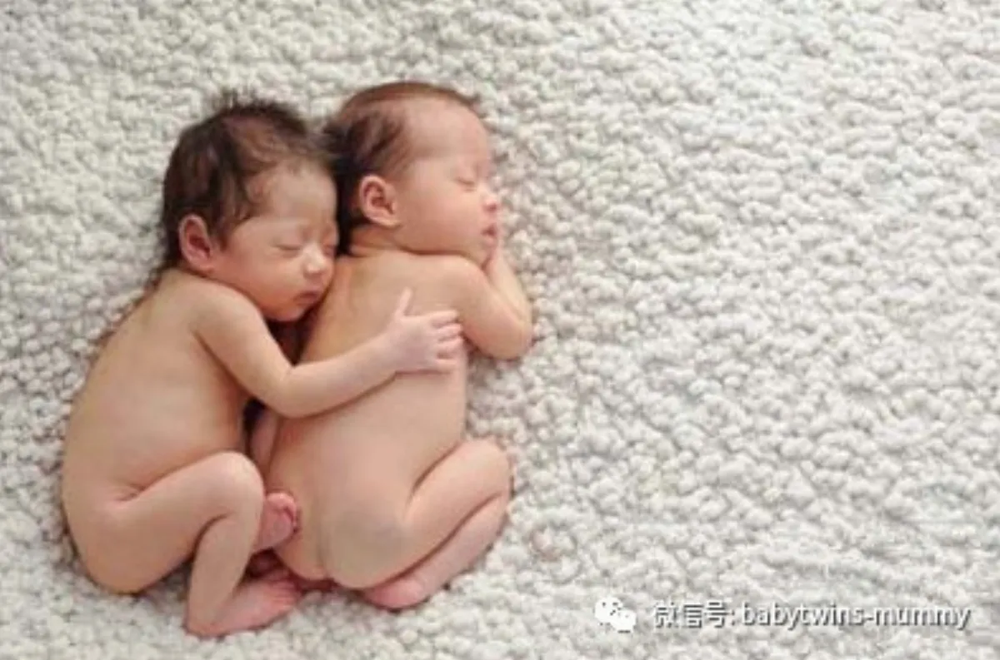
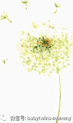
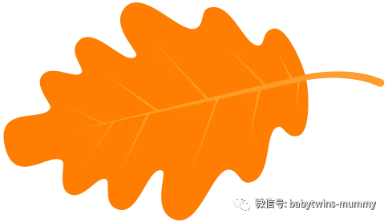
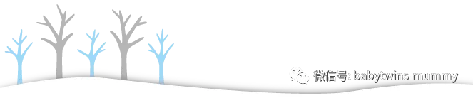

点击上方“孖仔帮”关注我们
孖仔帮
汇集全国各地及海外的双胎妈妈的交流园地
专门针对双胎孕期，喂养，教育等方面的经验分享
孖仔帮期待您的加入！
让我们一起成长，快乐育儿！
许多双胎妈妈大多数都是在孕6周---8周的时候，才知道自己原来就是那个“集万千宠爱于一身”的双胎妈咪。
有些做试管的准妈咪估计在孕4周就确定了。
于是乎开始手忙脚乱的产检，尤其是刚开始查血确认妊娠的时候，想必是被检查报告中的各种专有名词唬得一傻一愣吧！
我们最新接触到的就是HCG 和孕酮。
什么是HCG？我的HCG翻倍好不好？
双胎的HCG 是不是要翻“double”倍啊？
孕酮是啥?又有什么用?为什么保胎要吃它?
一系列的问题，今天孖仔帮跟你一起探讨下。
先来科普下两个专有名词
人绒毛膜促性腺激素（HCG）
若HCG显示上升，就是明确告诉你小生命诞生啦。
HCG（绒毛膜促性腺激素）是妇产科医生们所熟悉和最常使用的“妊娠试验”激素。
它由胎盘绒毛膜的合体滋养层产生，由a和β两个亚单位构成（临床多检测β-HCG）。
它的主要功能就促进子宫蜕膜的形成，使胎盘生长成熟，以维持妊娠。
妇女受孕后，从第9－11天起即可测出血中β－HCG升高。而且HCG还是胎儿是否健康的重要判断依据，一般来说，每两天β－HCG的量可升高2倍，如果连续两次增加速度缓慢，表明有宫外孕或者胚胎不正常发育的可能。
不同人的HCG值高低是不一样的，所以准妈妈们不必和别人比较，只要自己的HCG值增长正常就好。
孕酮（P）
是两个小生命赖以生存的“家”
孕酮又称为黄体酮、孕酮激素，是卵巢分泌的具有生物活性的孕激素。孕酮对子宫有一定的镇定作用，可以使子宫肌纤维松弛，降低子宫兴奋度，从而给受精卵提供一个稳定、柔软的着床环境.
在女性怀孕期间，孕酮激素可以给胎儿的早期生长及发育提供支持和保障。
我在孕早期总共查过三次血，以下是数据。
孕5周+
绒毛膜促性腺激素-β（HCG）:8042miu/ml
孕酮（PROG）16.12ng/ml
孕8周
绒毛膜促性腺激-β（HCG）:156976.00miu/ml
孕酮（PROG）19.76ng/ml
孕10周
绒毛膜促性腺激-β（HCG）:169610.00miu/ml
孕酮（PROG）48.19ng/ml
第一次查血，初次怀孕的我，看到血象报告和医生的确诊，终于相信我即将要做妈妈了。
但医生说孕酮低，要吃黄体酮，在医生建议下吃了半个月的黄体酮后复查。
第二次查血，HCG翻倍正常，但是孕酮依旧偏低，此时是孕8周左右，
就是这个时候，我才知道原来我的HCG 翻那么多倍，就是双胎的缘故！
无奈土壤不够肥沃，不够两个小胚芽的营养吸取，我又被医生要求继续吃半个月的黄体酮胶囊。
第三次查血，孕10周，再一次复查孕酮，HCG 继续上升，孕酮终于达到正常水平。
现在想想我觉得我是花钱买罪受了！
其实孕5周那会儿，医生在没有排除宫外孕的前提下是不能擅自给我保胎的，而且目前研究发现使用黄体酮保胎并不增加成功妊娠的机会。
好在我福大命大，圆圈兄弟没有走错门。
孕8周，我被确诊双胎妊娠，其实那会儿孕酮并没有特别低，但是被医生以双胎为由，硬生生又被灌了半个月的黄体酮胶囊。
因此，孕早期，我整整吃了四盒黄体酮，两个疗程，每个疗程半个月，还好没有同意让医生打黄体酮针，不然更折腾。
我发现在服用黄体酮期间，早孕反应特别严重。有几天忘记吃黄体酮胶囊，我居然神奇地吃了半碗粥和一杯豆浆。
这更加让我坚信，吃黄体酮会加重早孕反应，最后第二个疗程，我只吃了一半就把剩下的扔掉了。
因此，过来人经验！
如果孕酮值低不是很严重的情况下，比如B超已经查到胎心胎芽，排除宫外孕，且无其他不适，可以不用额外补充黄体酮。
双胎准妈咪完全可以通过饮食的方法来进行调节，从食物中摄取较为丰富的大豆异黄酮与天然维E。
大豆：大豆等豆类食物含有丰富的大豆异黄酮和天然的维生素E，可以帮助自身产生孕酮。解决孕酮低的问题。
芹菜：芹菜中含有孕酮，这样吃既营养又补充了孕酮。
草莓：草莓含有比较丰富的大豆异黄酮和天然维E，对孕酮的提高有一定帮助。
菠菜：菠菜中含有孕酮素，如果备孕时或孕早期出现孕酮缺乏的问题，可以适当吃些菠菜。
柠檬：富含维生素C、柠檬油精、生物类黄酮素等，而丰富的维生素C有助於促进血液循环，帮助铁质吸收.
“怎么会呢？明天一定是个大晴天！”
“你怎么会知道明天是个大晴天？”
“因为希望在明天呀！”
除了食补，还有一点：
心情很重要！
研究表明，如果孕妈咪心情低落，长期处在恐慌焦虑的心里状态下，
会抑制黄体酮的分泌，从而，进一步造成女性雌激素、雄性激素、黄体生成素、孕激素的平衡被打破。
其实，在10个孕妇中可能就有7个孕妇会出现孕酮低的情况，不需要过分紧张。
40%的流产原因是胚胎本身发育问题，而不是原发性的孕酮低。也就是说孕酮低大多数情况下是结局，不是病因。
定期查一下HCG和雌二醇以及B超，如果这些检查都正常，以后按时产检，安心养胎即可，
特殊情况！
如果孕酮严重过低，应该在医生的指导下服用保胎药。
孕酮补充时间要根据女性的孕酮情况来决定，一般情况下是先补充到7-10天，去医院复查，如果达到正常水平就不需要再补充。若女性孕酮低的还比较厉害，则需要继续补充。
一般到怀孕3个月就不用再服用黄体酮补充孕酮了，因为怀孕3个月胎盘就能产生孕酮，不需要再补充。
还有一种情况，当孕妇的孕酮值低于15ng/ml，且没有胎心的话，就应该放弃保胎。因为这种情况大都是胎儿发育不正常所致，就算这次保胎成功，以后还可能出现流产、胎儿畸形等情况。
参考资料：陈庆华大夫
圆圈妈
资深屌丝女+腐女一枚，家有孖仔男两枚。
微信公众号ID：babytwins-mummy 孖仔帮
个人博客：双胞胎萌娃会（www.sgguy.com）
一个专注双胞胎群体的网站，每天分享亲子养育经验
点击“阅读原文”即可直接进入博客网站




